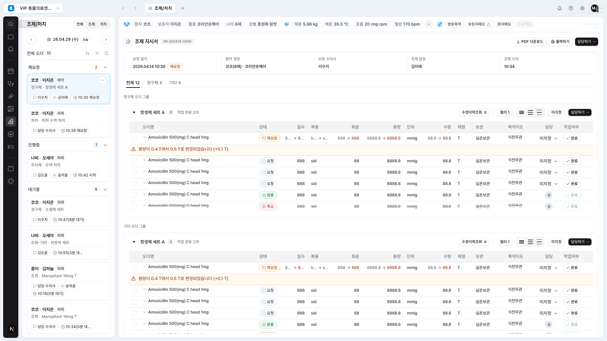
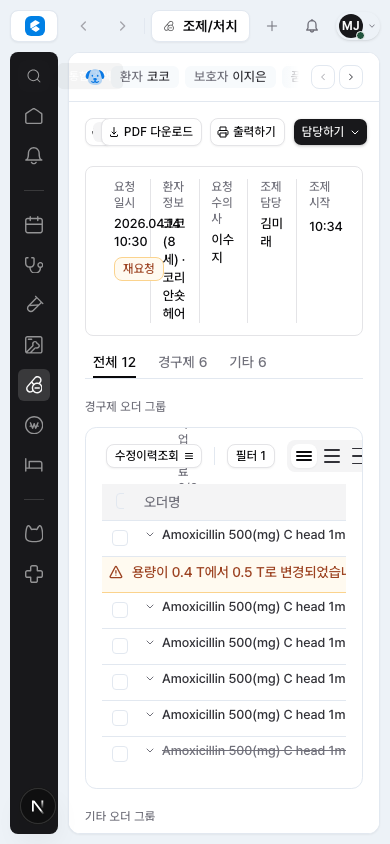

DEN-351 CDS V2 Shell Surfaces & Command Entry Report
작성일: 2026-05-31 / 프로젝트: 17 CLAiR EMR CDS V2 App Shell Refinement
첫 구현 단위로 앱 셸의 배경/패널 색상 계층을 CDS V2 방향에 맞게 밝게 정리하고,
전역 통합 검색 버튼을 topbar에서 nav rail 안으로 옮겼다. 검색 dialog와
Cmd/Ctrl+K 단축키, 환자 검색 후 이동 동작은 그대로 유지했다.
변경 내용
GlobalCommandPalette에 nav rail 전용railtrigger variant를 추가했다.NavRail상단에 전역 통합 검색 trigger를 배치하고 tooltip을 유지했다.WorkspaceTabsBar에서는 검색 trigger를 제거해 topbar를 다음 이슈에서 다듬기 쉬운 상태로 만들었다.WorkspaceSwitcher를 32px 높이, 고정 폭, hairline border, 작은 logo mark 버튼으로 조정했다.- EMR surface/line alias를 CDS V2에 가까운 밝은 gray 계층으로 정리했다.
- app-shell Playwright 기대값을 nav rail command 위치와 collapsed switcher mark 크기에 맞게 갱신했다.
변경 파일
src/styles/tokens/emr-foundation.csssrc/shell/global-command-palette.tsxsrc/shell/nav-rail.tsxsrc/shell/workspace-tabs-bar.tsxsrc/shell/workspace-switcher.tsxsrc/shell/shell-main.tsxsrc/shell/workspace-frame.tsxsrc/shell/app-shell.tsxtests/app-shell.spec.ts
시각 증거


검증 결과
npm run lint -- --ignore-pattern '.worktrees/**': 통과, 기존 unrelated warning 5개 남음.npx tsc --noEmit: 통과.npx playwright test tests/app-shell.spec.ts --project=chromium: 32개 통과.- Desktop/narrow screenshot에서 command trigger 크기
32x32확인.
제외 및 후속
- Topbar tab chrome 자체의 재설계는 DEN-352에서 진행한다.
- 좌측 task card, status title icon, 환자/문서 정보바, content aside는 DEN-353부터 DEN-356에서 별도로 진행한다.
- 중앙 조제/처치 order table 본문은 Project 17 범위에서 제외된 상태를 유지했다.